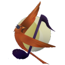
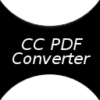
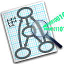

Astuce Windows : vous pouvez aussi utiliser notre service Framapack afin de télécharger plusieurs de ces applications facilement en une seule fois, plutôt que de passer par chaque site individuellement.
-
Firefox
Navigateur web
Rapide, sûr, fiable, extensible... Firefox est tout simplement le meilleur navigateur libre.http://www.mozilla.org/fr/firefox/new/
-
Thunderbird
Client mail
Le client mail libre par excellence. Thunderbird est une application de messagerie facile à configurer et à personnaliser.http://www.mozilla.org/fr/thunderbird/
-
Pidgin
Messagerie instantanée
Messagerie instantanée (tchat) multiprotocole (compatible MSN, Yahoo!, Google Talk, IRC, etc)http://adium.im/
-
Searx
Moteur de recherche
Un méta-moteur de recherche efficace qui accorde beaucoup d'importance à la protection de la vie privée de ses utilisateurs. Il s'inspire du projet Seeks.https://searx.me/
Astuce Framasoft propose Framabee, un méta-moteur basé sur Searx.
-
LibreOffice
Bureautique
La suite bureautique qui succède à OpenOffice.org. Traitement de texte, tableur, création de diaporama, etc. : profitez d'une suite complète en un seul logiciel.http://fr.libreoffice.org/
-
Scribus
Publication Assistée par Ordinateur
Logiciel de P.A.O. avancé, Scribus est idéal pour réaliser un journal ou une plaquette d'informations.http://www.scribus.net/canvas/Scribus
-
SumatraPDF
Lecteur PDF
Visualisez rapidement vos fichiers PDF avec ce lecteur PDF très léger et réactif.http://blog.kowalczyk.info/software/sumatrapdf/free-pdf-reader.html
Recommandation Utilisateur Mac : Okular ou Skim
-
Gimp
Editeur d'images (bitmap)
Le roi des éditeurs d’images du monde du Libre. Retouchez facilement vos photos, faites vos propres montages, etc.http://www.gimp.org/
Recommandation Vous pouvez aussi utiliser Pinta, beaucoup plus limité, mais plus simple à prendre en main.
-
Inkscape
Editeur d'images (vectorielles)
Inkscape est l'outil rêvé pour créer vos logos, bandes dessinées, plans, etc.http://inkscape.org/
-
Blender
Modélisation et animation et de rendu 3D
Considéré comme une référence dans son domaine, il est également utilisé en milieu professionnel.http://www.blender.org/
-
VLC
Lecteur audio et vidéo
Le 4x4 des lecteurs vidéos. VLC peut lire la quasi-totalité des formats vidéo, sait lire de nombreux formats de sous-titre, etc.http://www.videolan.org/vlc/
-
Audacity
Editeur de fichiers son
La boîte à outil sonore. Avec Audacity, vous pouvez bien entendu vous enregistrer, mais vous pouvez surtout retoucher, découper, manipuler vos fichiers audio.http://audacity.sourceforge.net/
-

Nightingale
Lecteur audio
Nightingale est un logiciel de gestion de bibliothèque musicale.http://getnightingale.com/
-
Avidemux
Montage et conversion de vidéos
Coupez, montez et remontez vos vidéos avec Avidemux. Puis convertissez-les dans le format de votre choix.http://fixounet.free.fr/avidemux/
-
Peazip
Compression et décompression de fichiers
Compressez vos fichiers et dossiers afin qu'ils occupent moins d'espace. Peazip sait bien évidemment extraire un grand nombre de fichiers compressés (ZIP, TAR.GZ, ACE, ARJ, CAB, DMG, ISO, LHA, RAR, etc.)http://peazip.sourceforge.net/
Recommandation Utilisateurs Mac: Vous pouvez aussi utiliser Keka.
Astuce : vous pouvez télécharger la version sans publicité.
-
7zip
Compression et décompression de fichiers
Compressez vos fichiers et dossiers afin qu'ils occupent moins d'espace. 7zip est également un format de compression.http://www.7-zip.org/
-
Bleachbit
Nettoyage disque dur
Supprime tous les fichiers inutiles et récupère de l'espace de stockage sur votre disque dur.http://bleachbit.sourceforge.net/
-
Notepad++
Editeur de texte
Un éditeur de texte léger mais très puissant pouvant aussi servir comme environnement de développement (C, C++, HTML, PHP, JS, etc)http://notepad-plus-plus.org/fr/
Recommandation Utilisateurs Mac: Vous pouvez aussi utiliser gEdit.
-
Geany
Editeur de texte
Un éditeur de texte léger et très puissant pouvant aussi servir comme environnement de développement ( C/C++, Java, JavaScript, PHP, HTML, CSS, Python, Perl, Ruby, Pascal et Haskell). Il est conçu pour avoir le minimum de dépendance et démarrer rapidement.http://www.geany.org/
-

CC PDF Converter
Création de PDF
Transformez n'importe quel document en fichier PDF. CC PDF Converter ajoute une imprimante virtuelle à votre système Windows. Tout ce que vous y "imprimerez" sortira sous la forme d'un document PDF. Il permet également d'ajouter une licence Creative Commons à votre document.http://www.cogniview.com/cc-free-pdf-converter/
-
InfraRecorder
Gravure de CD et DVD
Gravez simplement et rapidement vos fichiers. InfraRecorder permet aussi la duplication/copie de CD ou DVD.http://infrarecorder.org/
Recommandation Utilisateur Mac : vous pouvez aussi utiliser Burn.
-
Filezilla
Clien FTP
Envoyez et récupérez des fichiers sur des machines distantes.http://filezilla-project.org/
-
R
Traitement de données
Outil d’analyse statistique et graphique avancé.http://www.r-project.org/
Astuce Vous pouvez utiliser RStudio pour une plus grande facilité d'utilisation.
-
-
Zotero
Gestion bibliographique
(Aucune description)http://www.zotero.org/
Astuce Zotero existe aussi en tant qu'extension pour Firefox.
-

-
SciLab
Calcul numérique avancé
Scilab est un logiciel open source gratuit de calcul numérique qui fournit un puissant environnement de développement pour les applications scientifiques et l’ingénierie.http://www.scilab.org/fr/
-

Latex
Composition de documents
LaTeX est un langage qui permet d'obtenir des documents complexes de grande qualité (formules mathématiques, respect des règles typographiques, gestion des références bibliographiques, etc.). Idéal pour la rédaction d'une thèse.http://www.latex-project.org/
Astuce Vous pouvez consulter l'ouvrage libre "Tout (...) sur LaTeX" dans la collection Framabook.
Et si vous passiez à GNU/Linux ?
Le mot Linux vous évoque peut-être des programmeurs barbus tapant du code obscur sur un écran noir. Bonne nouvelle ! Les choses ont changé.
Le principe
Linux est un système d'exploitation, un logiciel important qui contrôle un ordinateur. Il est semblable à Microsoft Windows, mais il est entièrement libre. Le vrai nom est GNU/Linux, mais "Linux" convient aussi.
Linux n'est pas le produit d'une seule entreprise, mais plutôt de groupes d'entreprises et de particuliers qui collaborent ensemble. En fait, le système d'exploitation GNU/Linux est en quelque sorte une version générique, qui peut être déclinée en différents produits. Ces produits sont appellés des distributions.
Ces distributions changent entièrement l'aspect et la fonction de Linux. Elles s'étendent du système complet (développé par des entreprises), pour des ordinateurs personnels ou des serveurs, à des systèmes légers (souvent développés par des volontaires) qui s'installent sur une clé mémoire USB ou sur de vieux ordinateurs.
Une distribution performante et conviviale pour passer à Linux est Ubuntu.
Utiliser Linux
Linux n'est pas plus difficile à utiliser que Windows, et a beaucoup plus de possibilités. Il ne faut qu'une dizaine de minutes pour se familiariser à une distribution comme Ubuntu ou Fedora, qui comportent beaucoup de programmes pré-installés.
Si vous avez besoin de logiciels libres et gratuits pour éditer du texte, tableur, internet, réseau ou dessin et graphiques, tout y est. Vous en voulez plus ? Linux est à la hauteur. Il existe des centaines d'applications que vous pouvez installer et désinstaller de manière facile, sûre et ordonnée.
Cependant, il ne faut pas penser que Linux est un clone de Windows. Pour savoir à quoi vous attendre, lisez la section Migrer sous Linux du site GetGnuLinux.org.
Texte issu du site site getgnulinux.org, licence CC-BY-SA version 2.0 ou ultérieure
Obtenir de l'aide
Le logiciel libre repose avant tout sur le partage d'information et l'entraide entre utilisateurs.
Acheter un ordinateur.
Vous n'êtes pas obligé d'acheter un ordinateur (fixe ou portable) avec Microsoft Windows ou Mac OS de préinstallés si vous n'en n'avez pas l'utilité. Certains revendeurs proposent du matériel sans système d'exploitation, ou avec GNU/Linux préinstallé. Voir par exemple le site http://bons-vendeurs-ordinateurs.info/
Support
Vous pourrez facilement trouver de l'aide pour les différents logiciels cités ci-dessus. Par exemple sur les forums des sites des logiciels en question, ou sur le forum de Framasoft.
Par ailleurs, si vous avez besoin d'aide à l'installation de GNU/Linux ou dans la prise en main des logiciels, sachez qu'il existe de nombreux Groupes d'Utilisateurs de Logiciels Libres (GULL) : .
Enfin, sachez aussi que certains de ces GULL organisent organisent régulièrement des install parties ou des rendez-vous réguliers d'entraide où les utilisateurs les moins aguerris peuvent échanger de visu avec des utilisateurs plus avancés. Par exemple, vous pouvez participer aux Ubuntu parties de l'association Ubuntu France, ou aux rencontres organisées par l'association Parinux (les premiers samedis et troisièmes jeudis de chaque mois).